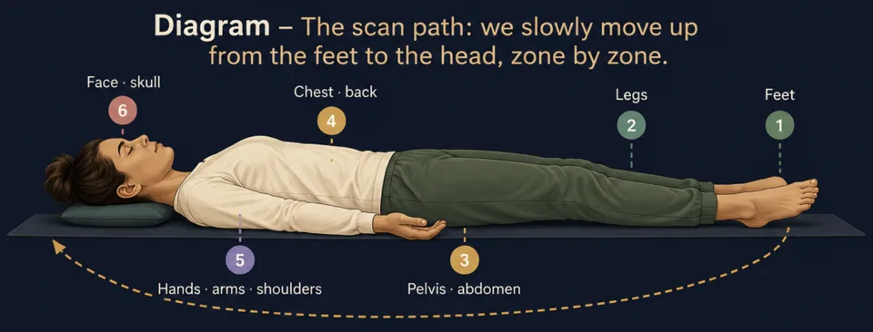
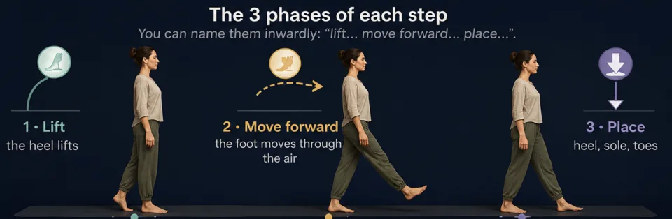
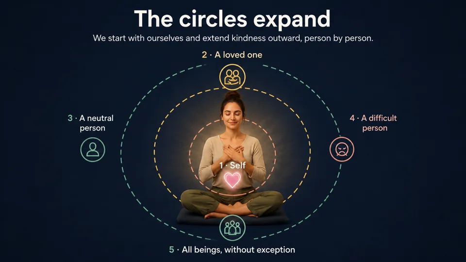
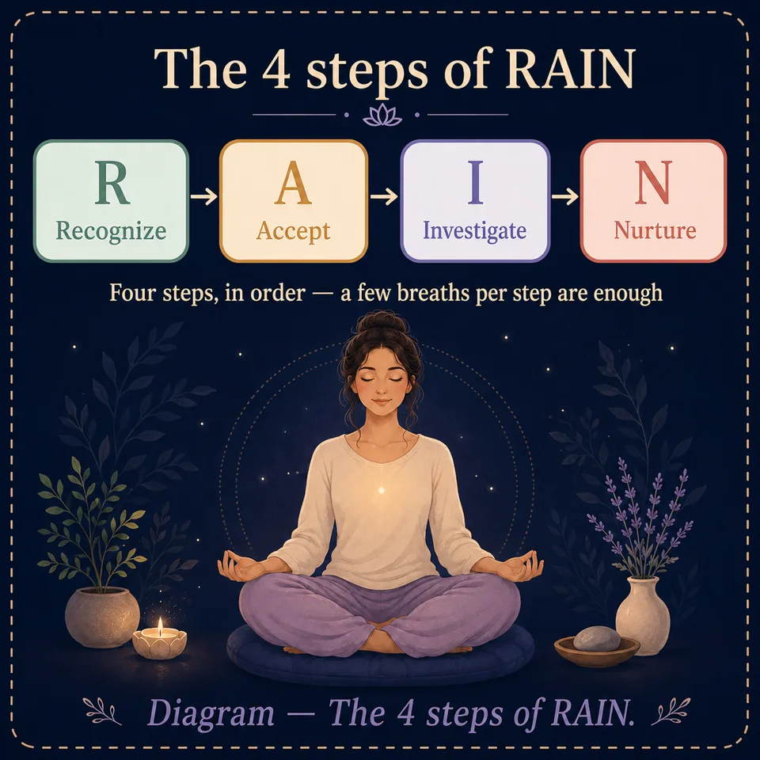

Meditation techniques: the main types, explained one by one
Meditation techniques explained one by one: body scan, walking meditation, loving-kindness, RAIN, visualization… each with its steps and diagram.
Body scan, walking meditation, loving-kindness, visualization, the RAIN method… The word “meditation” covers very different techniques, each with its own strength. This guide explains them one by one — how to practice each, when to choose it, and who it suits.
The menu techniques
Mindful breathing
The gateway to all meditations. You simply place attention on the sensations of the breath, without modifying it. It's the technique to master first: all others build on it.
Step by step
- Set up your posture (section 2) and close your eyes or lower your gaze.
- Take 3 deep breaths to mark entering the session, then let the breath return to natural.
- Choose your observation point: the cool air at the nostrils, the chest rising, or the belly expanding. Keep the same one throughout the session.
- Observe each breath from the start of the inhale to the end of the exhale, like a complete wave.
- When the mind drifts (it will!), note “thought,” smile inwardly, return to the breath.
- To finish, broaden attention to sounds, to the whole body, then open your eyes slowly.
Body scan
A journey of attention through the body, from toes to the top of the skull. Excellent for releasing accumulated tension, reconnecting with sensations and preparing for sleep. Practiced lying down or sitting.

Step by step
- Lie down (or sit), take 5 abdominal breaths to settle.
- Bring attention to the toes of the left foot. What do you feel? Warmth, contact, tingling… or nothing at all — “nothing” is also a valid observation.
- Move up zone by zone: foot, ankle, calf, knee, thigh… then the other leg, pelvis, belly, back, hands and arms, shoulders, neck, face, skull.
- At each zone, stay for 3 to 5 breaths. On a tension, imagine the exhale passing through and softening it.
- Finish by feeling the whole body, unified, for a few breaths.
Mindfulness
Being fully present to what is, moment after moment, without judging. In session, you observe breath, sounds, sensations and thoughts in turn. Outside session, you apply it to daily gestures — eating, walking, showering.
Step by step (formal session)
- Stabilize 2–3 minutes on mindful breathing.
- Open to sounds: welcome them as they come, near or far, without naming or commenting.
- Open to sensations: contacts, temperatures, tensions — the body as a landscape.
- Open to thoughts and emotions: watch them appear and disappear, like bubbles.
- Rest in open presence: no particular object, just being there, aware of everything that arises.
- Return to the breath 1 minute before concluding.
The daily version: the raisin exercise 🍇
Take a simple food (raisin, square of chocolate). Observe it for 30 seconds as if for the first time: color, texture, smell. Place it in your mouth without biting. Explore. Finally bite, very slowly. This foundational exercise shows how automatic our gestures are — and what “presence” means.
Walking meditation
Meditating in movement. Perfect for those who “can't sit still,” to fight drowsiness, or to take an active break. Practiced over a few meters, indoors or outdoors.

Step by step
- Choose a quiet corridor of 5 to 10 meters. Standing still, feel your contact with the ground for 30 seconds first.
- Walk very slowly — much more slowly than usual. Hands joined in front or behind the body, gaze resting 2 m ahead.
- Break down each step: lift · move · place. Feel the transfer of weight from one foot to the other.
- At the end of the corridor, stop, breathe once, turn mindfully, walk back.
- Mind elsewhere? Stop a second, return to foot sensations, walk on.
Loving-kindness (Metta)
Actively cultivating kindness, toward yourself and then toward others, by inwardly repeating sincere wishes. This practice softens self-criticism, calms difficult relationships and develops warmth and empathy.

Step by step
- Settle 2 minutes on the breath, one hand on the heart if it helps.
- For yourself, repeat slowly: “May I be safe. May I be healthy. May I be at peace. May I live with ease.” Let each phrase resonate.
- Visualize a loved one and address the same wishes to them: “May you be safe…”
- Then a neutral person (a shopkeeper, a neighbor you passed) — same formula.
- Then, if you feel ready, a difficult person. Start modestly: someone mildly annoying, not your worst conflict.
- Finally extend to all beings: “May all beings be at peace.”
Visualization
Using mental imagery as a meditation support. You build inwardly a place or a resource image (beach, forest, light) and inhabit it with the five senses. Very useful for calming, confidence, and mental preparation.
Step by step — the “safe place”
- Close your eyes, 5 abdominal breaths.
- Let a place where you feel good arise — real or imaginary: a beach, a clearing, a warm room.
- Build it sense by sense: what do you see (colors, light)? What do you hear (waves, wind)? What do you feel on your skin (warmth, breeze)? A smell? A taste?
- Settle into the scene. Find your exact place, your position. Breathe as if you were there.
- Anchor the place: give it a name or associate it with a gesture (thumb against index). You'll be able to “return” there in seconds during a stressful day.
- Leave the scene gently, return to real sounds, move your fingers, open your eyes.
Mantra meditation
Repeating a sound, word or phrase as an anchor, in place of the breath. The rhythm of repetition occupies the discursive mind and induces calm absorption. Ideal for very chatty minds, for whom the silence of the breath leaves too much room for thoughts.
Choosing your mantra
Meaning matters less than sonority and neutrality: choose a word that doesn't trigger reflection, and keep the same one for several weeks.
Step by step
- Posture, eyes closed, 3 deep breaths.
- Begin softly: repeat the mantra gently, 1 to 2 minutes, feeling its vibration.
- Move to a whisper, then to purely mental repetition, aligned with the breath (e.g., “so” on the inhale, “ham” on the exhale).
- Let the mantra turn on its own. If it slows, fades or distorts, that's a good sign: don't interfere.
- Mind drifted? Simply resume the repetition, without comment.
- Finish with 1 minute of silence, observing the mantra's echo.
Sleep and deep relaxation
The only meditation where falling asleep is a success. Combine calming breath, descending body scan and gentle visualization to bring the nervous system into rest mode. Practice in bed, lights off.
Step by step
- Prepare the ground: screens off 30 minutes before, cool dark room, lying on your back or in your sleeping position.
- 4 cycles of 4-7-8 (see the Breath section) to trigger relaxation.
- Descending body scan: this time from skull to feet. At each zone, whisper inwardly “releases”: the forehead releases, the jaw releases, the shoulders…
- Heaviness: imagine the body sinking gently into the mattress, heavier with each exhale.
- Gentle image: let a calm scene float (the safe place from visualization) without trying to specify it.
- If sleep doesn't come, no pressure: staying in this relaxation is already deeply resting. Letting go of “I MUST sleep” is precisely what allows sleep.
")

Observation (Vipassana)
Finely observe everything that appears — sensations, thoughts, emotions — to perceive their changing, impermanent nature. Where mindful breathing concentrates, Vipassana explores. Prerequisite: being comfortable with 15 minutes of mindful breathing.
Step by step
- Stabilize attention 5–10 minutes on the breath: the essential foundation.
- Broaden to body sensations: scan the body and stop on what manifests — warmth, pressure, pulsation, tingling.
- Observe each sensation with equanimity: neither hold it if pleasant, nor flee it if unpleasant. Watch it arise, change, vanish.
- Label what passes through you: “thought,” “tension,” “irritation,” “urge to move” — then return to observation.
- Notice impermanence: everything you observe arises then passes. This is the central insight of the practice.
- Close the session with 2 minutes of breath and a moment of kindness toward yourself.
Open presence (Zazen / Shikantaza)
“Just sitting.” Neither object of concentration, nor technique: a total, aimless presence to the moment. It's the most stripped-down of practices — and paradoxically one of the most demanding, because there's “nothing to do” and therefore nowhere to hold on.
Step by step
- Posture IS the practice: set it up with particular care (section 2). In traditional zazen: eyes half-closed, gaze resting 1 m ahead, hands in an oval on the thighs, thumbs touching.
- A few deep breaths, then let the breath be free.
- Take no object: don't follow the breath, don't count, don't aim. Be the whole room: sounds, light, body, breath, thoughts — all at once, nothing in particular.
- When a thought carries you off, return to the sensation of sitting — weight, verticality, contact.
- Stay still until the closing signal. Stillness of the body teaches stability of the mind.
Gratitude meditation
Deliberately orient attention toward what is going well. The brain has a negativity bias: it retains threats ten times better than what nourishes. Gratitude is a simple counter-training whose effect on mood and sleep is one of the best documented in positive psychology.
Step by step
- Settle 1–2 minutes on the breath, one hand on the heart if you like this gesture.
- Let 3 things from your day come to mind for which you can say thank you. Preferably small: a ray of sunshine, a message received, a hot coffee. The concrete beats the grand.
- For each one, relive the scene for a few breaths: where were you, what did you feel? Let the pleasant sensation settle in the body (warmth, ease, smile).
- Include a person: visualize someone who contributed, even indirectly, to your day, and send them a silent thank you.
- Finish with yourself: one thing YOU did today that you acknowledge. It's often the forgotten step — and the most transformative.
Welcoming a difficult emotion (RAIN)
A 4-step protocol to move through a strong emotion — anger, anxiety, sadness, shame — instead of fleeing it or drowning in it. RAIN stands for Recognize, Allow, Investigate, Nurture. It's the technique to draw when “it overflows.”

Step by step
- R — Recognize: name what's there, simply: “there is anger,” “there is anxiety.” Saying “there is anger” rather than “I am angry” already creates space.
- A — Allow: permit the emotion to be present, for the duration of this practice. Not approving it — just ceasing to fight the fact that it's there. You can whisper “yes” or “it's here.”
- I — Investigate: with curiosity, explore it in the body: where does it live? Tight throat, hot chest, knotted belly? What size, what temperature? Does it stay fixed or does it move? Stay with sensations, not the story (“he said that…”).
- N — Nurture: offer yourself what this part of you needs: a hand on the heart, a kind phrase (“this is hard, and I'm here”), the image of a kind loved one. Treat yourself as you'd treat a friend in the same state.
- After the rain: stay a few breaths in the relative calm that follows, without mentally reopening the file.
SOS micro-meditations (1 to 3 minutes)
Lightning practices for hot moments: before speaking in public, after an irritating email, in a queue, in the middle of a day going off the rails. No posture required — standing, sitting, walking, eyes open.
🛑 The STOP method (1 minute)
- S — Stop: interrupt what you're doing, for a second.
- T — Take a breath: one deep breath, belly expanding, long exhale.
- O — Observe: what's happening there, now? Body, emotions, thoughts — a lightning scan of 3 breaths.
- P — Proceed: resume your activity, consciously choosing what comes next.
🖐 5-4-3-2-1 grounding (2 minutes) — anti-anxiety
When the mind races, come back to the senses: name 5 things you see, 4 you hear, 3 you touch, 2 you smell, 1 you taste. It's impossible to ruminate and inventory your senses at the same time.
🌬 The physiological sigh (30 seconds)
Two nasal inhales in a row (one big + one small to “top up”), then a long exhale through the mouth. Repeat 3 times. It's the fastest known way to bring down a stress spike.
Sound meditation (deep listening)
Making sounds your anchor. Instead of fighting noise (neighbors, street, open space), you make it the very support of the meditation. Very accessible: sounds naturally capture attention, you just have to listen. Also ideal for those bored or anxious about the breath.
Step by step
- Posture, eyes closed, 3 breaths to arrive.
- Open your ears wide: welcome all sounds, without seeking any. Near, far, continuous, brief.
- Listen as you would look at a landscape: sounds appear, live, disappear. Don't label (“car,” “fridge”) — stay with the sonic material: low/high, near/far, rough/smooth.
- Notice the silences between sounds — the space in which all this appears.
- When a thought carries you off (often triggered by a sound: “who's honking again?!”), note “thought” and return to bare listening.
- Finish by including the closest sound of all: your own breath.
Which technique to choose? Cross-reference table
| Your need | Recommended technique | Level |
|---|---|---|
| Discover meditation | Mindful breathing | Beginner |
| Stress, physical tension | Body scan · Cardiac coherence | Beginner |
| Sleep better | Sleep and relaxation · 4-7-8 | Beginner |
| Can't sit still | Walking meditation | Beginner |
| Very chatty mind | Mantra · Box breathing | Intermediate |
| Self-criticism, difficult relationships | Loving-kindness (Metta) | Intermediate |
| Mental preparation, confidence | Visualization | Intermediate |
| Deepen self-knowledge | Vipassana | Advanced |
| Radical simplicity, letting go | Zazen | Advanced |
| Low mood, negative rumination | Gratitude | Beginner |
| Strong emotion to move through (anger, anxiety…) | RAIN · Physiological sigh | Intermediate |
| “Zero time” in the day | SOS micro-meditations (STOP, 5-4-3-2-1) | Beginner |
| Noisy environment · uncomfortable breath | Sound meditation | Beginner |
Practice with the app
Rather practice than read?
Everything in this article can be practiced in MeditaDream, a free meditation app: 129 guided meditations and 17 immersive worlds, with no subscription, no ads, no account, and fully offline.
✦ Discover the free app